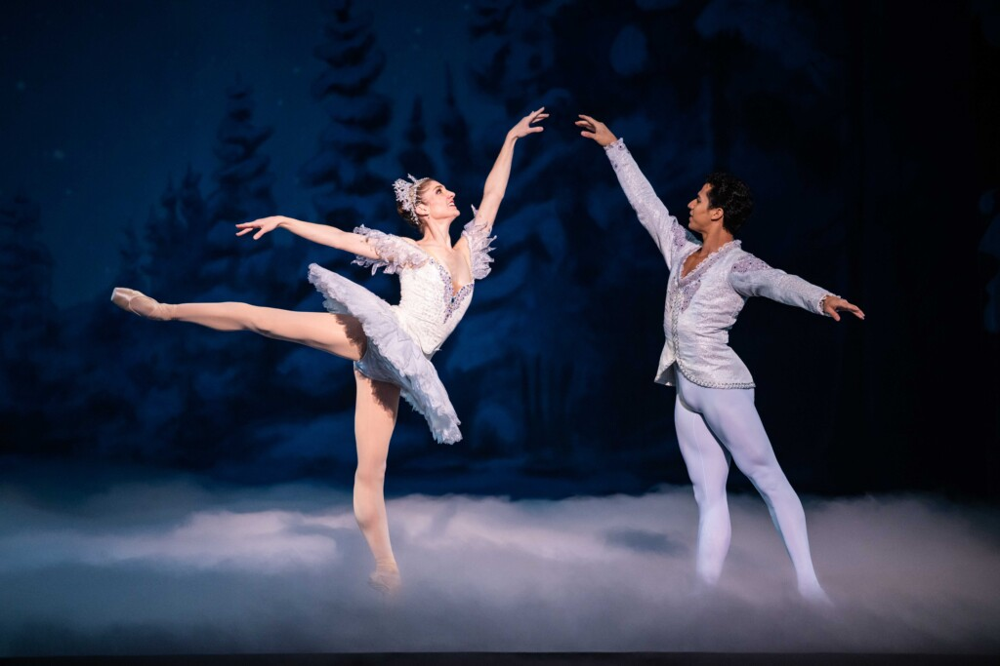
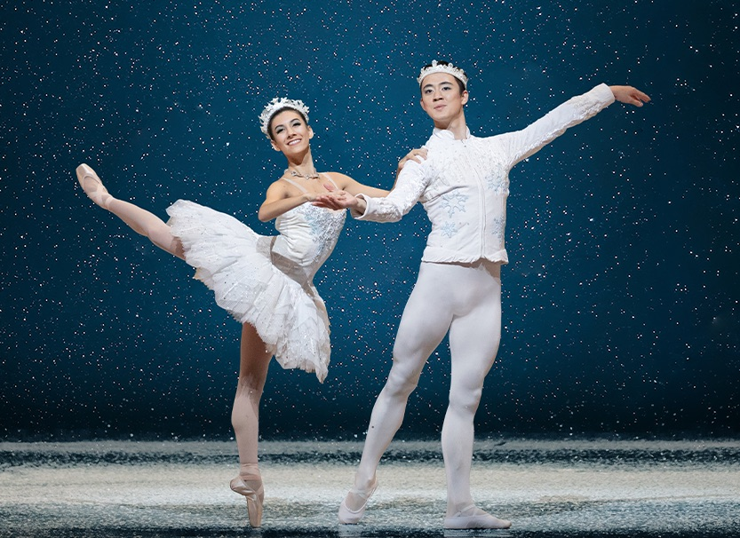

Historical and Modern Implications of
The Nutcracker
History
The Nutcracker ballet originated from E.T.A. Hoffmann's 1816 story The Nutcracker and the Mouse King, later adapted by Alexandre Dumas and transformed into a ballet by composer Pyotr Ilyich Tchaikovsky in 1892. The two-act ballet follows a young girl, Clara, who embarks on a magical adventure with her enchanted Nutcracker prince, encountering whimsical characters like the Mouse King, dancing snowflakes, and the Sugar Plum Fairy. Though initially receiving mixed reviews at its premiere in St. Petersburg, Russia, The Nutcracker quickly gained popularity, and by the mid-20th century, George Balanchine’s 1954 production with the New York City Ballet cemented its status as a cherished holiday tradition in the United States and beyond.
Modern Times
Today, The Nutcracker is one of the most beloved and widely performed ballets, especially during the Christmas season, with countless versions staged around the world each year. Modern productions vary widely, with some sticking to classical interpretations and others incorporating new cultural influences, contemporary choreography, or updated settings, but all retain the ballet's enchanting music and core story. This timeless tale of holiday magic, dreams, and adventure continues to captivate audiences of all ages, symbolizing the wonder of the holiday season and inspiring new generations of ballet enthusiasts.